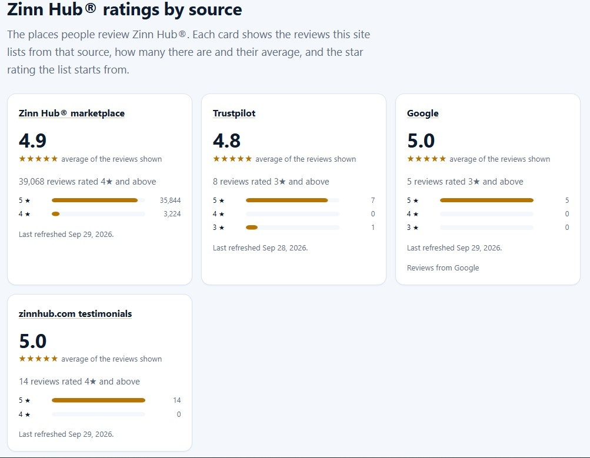

How Zinn Hub Counts and Averages Its Reviews
Every review score is the answer to a question, and the question is usually hidden. "4.9" could mean the average of every rating ever given, or the average of only the good ones, or the average of a dozen reviews posted last month. Before a number can help you, you need to know which question it answers.
This page explains how the review numbers for Zinn Hub, the freelance marketplace run by UK company Zinn Digital Ltd, are built.

Four lists, four cut-offs
The Zinn Hub review site keeps a separate list for each source, and each list starts at a stated rating:
| List | Includes | Count and average shown | Refreshed |
|---|---|---|---|
| Marketplace reviews | Ratings of 4★ and above | 39,071, average 4.9 (1 Oct 2026) | Daily |
| Trustpilot | Ratings of 3★ and above | 8, average 4.8 | Weekly |
| Ratings of 3★ and above | 5, average 5.0 | Daily | |
| Testimonials | Ratings of 4★ and above | 14, average 5.0 | Daily |
Together the lists held 39,098 reviews on 1 October 2026. Each list prints its cut-off beside its count, so the filter is never hidden.
Filtered averages and full scores
An average is only as broad as the reviews that went into it. The 4.8 shown for the Trustpilot list is the average of the eight reviews rated three stars and above. Zinn Hub's full Trustpilot score, from all 12 reviews, was 3.4 on 2 October 2026. The same applies to Google: 5.0 across the five reviews listed, but 4.4 from all seven on Google itself.
Neither number is wrong. They answer different questions. The filtered figure tells you what the good reviews look like. The full score tells you how the whole sample comes out. When you compare platforms, compare full score with full score, never a filtered average with a full one.
What is left out, and why
Two things never reach the lists. Ratings below each cut-off are left out by design, and the cut-off says so. Reviews carrying a date in the future are also excluded, because a date that has not happened yet cannot be right. Reviews that are included are never edited, shortened, summarised or machine-translated.
Publishing reviews selectively is not unusual, but in the UK it carries obligations. The Competition and Markets Authority's fake reviews guidance explains what businesses must do so that the reviews they show do not mislead. Stating each cut-off and linking to the full profiles is how the review site sets out to keep its lists from misleading anyone.
Checking the figures yourself
The working record behind these numbers is public. The source and category index lists each source, its cut-off, its count and the date it was checked.
Counts are not rates
The marketplace figure, 39,071 reviews rated four stars and above, is easy to misread. It is a count of orders that ended well enough for the buyer to give four or five stars. It is not a satisfaction rate, because the reviews below four stars are not in the list, and buyers whose orders go badly often ask for a refund rather than writing a review at all.
So the honest reading is this: a very large number of orders have been delivered to a good standard. What the count cannot tell you is how often things go wrong. For that, you need the open platforms, where every rating is shown, and the buyer protection rules, which tell you what happens when an order fails.
Small samples move quickly
Twelve reviews on Trustpilot and seven on Google are small numbers, and small numbers are sensitive. As a rough illustration using a simple average: twelve reviews averaging 3.4 would rise to about 3.5 with one more five-star review, and fall to about 3.2 with one more one-star review. Trustpilot's own TrustScore is not a plain average, because it gives more weight to recent reviews, but the lesson is the same. A single review can move a small sample noticeably.
That is not a reason to ignore the open platforms. It is a reason to read what each review says rather than relying on the headline number.
Why the dates matter
The four lists are refreshed at different speeds: marketplace reviews and testimonials daily, Trustpilot weekly. Figures checked on different days can therefore disagree slightly, and a list may lag the platform it draws from by a few days. That is why every figure on this site carries the date it was checked. When two numbers seem not to add up, check their dates first.
Five questions for any rating
These work for Zinn Hub and for any other platform:
- Which source is it from? A marketplace, an open review platform, or the company's own selection?
- Which ratings does it include? All of them, or only those above a cut-off?
- How many reviews sit behind it? Twelve and thirty-nine thousand are very different samples.
- When was it checked? A figure without a date could be a year old.
- What is it rating? One seller, one service, or the whole platform?
If a number cannot answer all five, treat it as a starting point rather than a conclusion.
What to remember
Ask what every number includes before you trust it. For a single page that sets all four sources next to each other with their full scores, see Zinn Hub reviews by source.